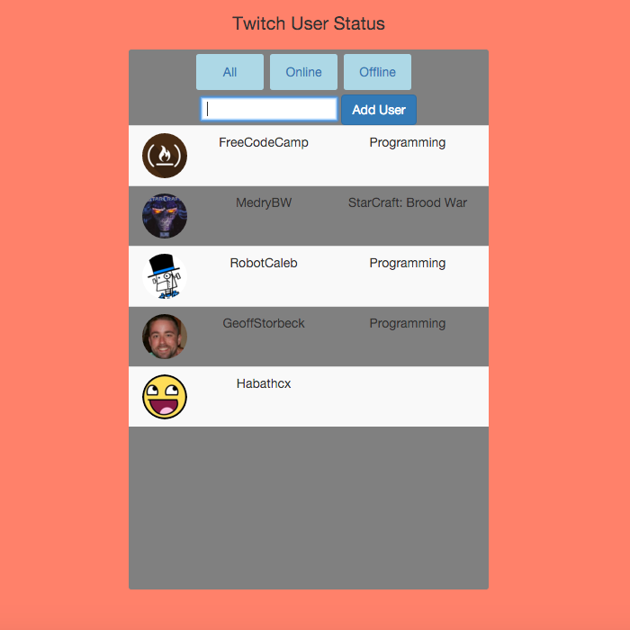

Front-End Web Developer
Javascript | Angular.js | jQuery | Bootstrap
Node.js | CSS | HTML | Git
My career background is primarily in social entrepreneurship
where I worked as a Team Lead in Operations and was a
Founder in a coffee Start-Up. (Check out my resume for more details)
Hi, I'm Aaron. I made the jump to coding as a
mostly self-taught Front-End developer. I've
worked mainly with technologies on the MEAN stack,
but I also have a soft spot for Python. Some samples
of my projects are below, and feel free to look at my
Github page to see what's under the hood.
Simple Apps

Basic weather app using OpenWeatherMap API. Displays current weather, condition icon and location. Background also changes depending on whether it's day or night.

Calculator designed using Angular. Performs basic arithmetic functions on two numbers up to ten digits.

Web app built in Angular with Twitch API that allows user to create custom list of favorite Twitch channels. List displays User logo, name, channel description and online status.